[2D, 3D]: The graphs window is used to generate load, speed, torque, angular velocity, energy and volume vs. time (or stroke) plots for the object. (See Fig. 26.6.7.1.)
User needs to select the X and Y axis variables, objects from plot objects table and then click on  button to plot the graph in graphics window. Single graph can be used to generate
plot for Multiple objects for selected variables of X and Y. Clicking on a point in the graph will load the nearest saved step from the database.
button to plot the graph in graphics window. Single graph can be used to generate
plot for Multiple objects for selected variables of X and Y. Clicking on a point in the graph will load the nearest saved step from the database.
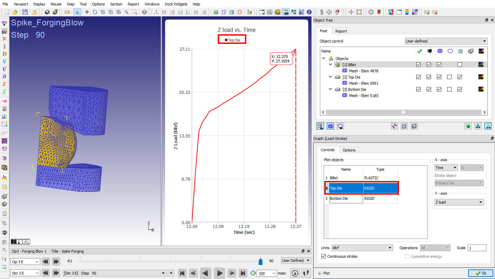
Load stroke graph window
User can export the graph data plotted in the graphics window using right click option Export graph data. Graph properties like, titles and its font, values range, number of decimals and display style and legend on/off can also be changed using right click option Set graph properties.
Note:
Due to various factors, some volume loss is unavoidable in FEM analysis. However, if volume loss exceeds more than about 1% of total volume, this should be a cause for concern.
In the controls tab Scale, Units, Continuous stroke, Cumulative energy and Operations options are available for specific X and Y axis variables selection and number of operations. The uses of these options are explained below,
Scale : Y-axis values of the graph can be scaled using this option. This option is available only for load and force variables.
Units : User can select units from the pull down menu in which the load / force values should be displayed. Units field is activated for load and force variables. In English units DB it gives options to plot load in klb or tons-English or tons-SI, in SI units DB it gives options to plot load in N or tons-English or tons-SI.
Operations : This field is activated when user loads multiple operations Database. User can plot graph for respective operations by selecting operation numbers from pull down menu.
Continuous stroke : It is activated when user plots stroke vs load. If user would like to view graph continuously across multiple operations then this option can be used. When user loads multiple operations DB and continuous stroke check box is turned on, stroke will be continuous throughout all the operations. If user unchecks this check box then stroke is not continuous throughout the operations.
Cumulative energy : It is activated when user plots Time vs Energy State variable. This option plots the cumulative energy consumption across all operations. When user loads multiple operations DB and Cumulative Energy check box is turned on, energy plot will be cumulative across all the operations. If user unchecks this check box, then Energy is consumed for each operation is plotted independently.
Options tab: provides display options like Turn on/off step tracer, Display absolute value and graph smoothing options (See in Fig. 26.6.7.2.). The uses of these options are explained below,
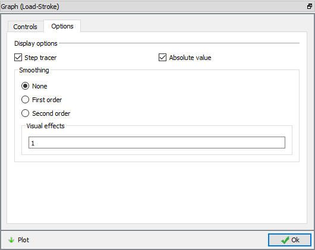
Load-Stroke graph options window
Step tracer : By checking this check box, step tracer will be displayed in graph window, indicating the values and location in the graph. If user selects any intermediate step, at that particular step it displays the X and Y axis values.
Absolute Value : By checking this check box, graph display shows only in absolute values.
Smoothing : Smoothing option is used to smooth the graph by using the first and second order radio buttons and visual effects value. Higher the visual effects smoothing error will increase.
Causes of volume loss and their remedies include: Corner cutting during remeshing: This is characterized by large drops in volume at remeshing steps. If elements around a relatively tight corner are too large, the portion of the element which penetrates the corner will be lost on remeshing. This can be controlled forcing a finer mesh in that region with mesh density windows, and by using the Maximum Interference Depth remesh trigger.
Excessive hydrostatic stress or too small volume penalty constant: This is characterized by a steep gradient in the volume curve between remeshings. Check that flow stress data is using the correct units. For problems such as high ratio extrusion with extremely high hydrostatic stress, it may be necessary to increase the volume penalty constant by an order of magnitude or two. Increasing the penalty constant may lead to convergence problems, so a balance must be struck.
Volume compensation (Preprocessor Objects Properties) can be used to control volume loss during remeshing.
Polygon sub stepping can be used to limit volume loss during simulation.
The graph properties option to modify the display of graph is available from the context menu options of the graph as shown in the Fig. 26.6.7.3. This option allows the user to change the graph properties like Title and labels, Range, Legend, Series, Step tracer, Theme, Smoothing, Equation and Grid/Tick as shown in the Fig. 26.6.7.4. With these options, user modify the display of the titles, legend, step tracer and grids, range of the axis values, define equation and so on.
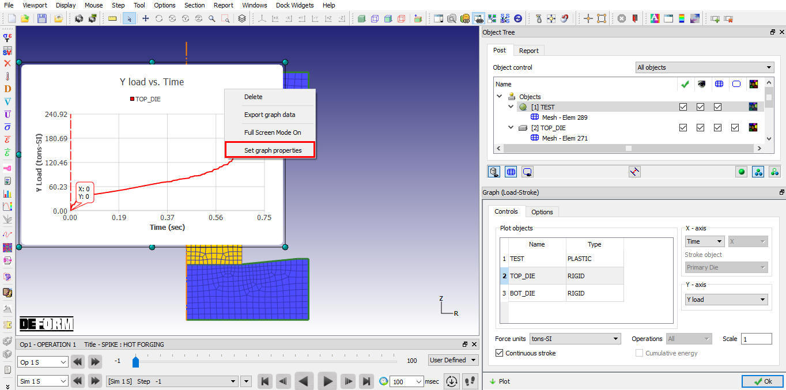
Right click menu of the graph
In this tab, user can change the name and font size of title and the X/Y axis labels (See Fig. 26.6.7.4.). User can turn on the "Translate title and axis labels" check box to translate the names of Title and axis labels into the language selected in Environment options of DEFORM.
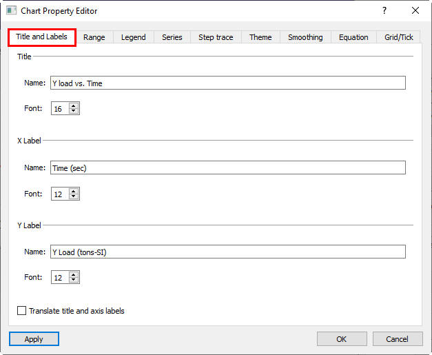
Title and Labels tab
In this tab, we have multiple options to set the axis range.
System determined: System determined option is selected by default and when this option is selected the minimum and maximum value of the axis is determined by the system based on the output value of the axis variable.
Show Origin: Minimum value of the axis is set to zero and the maximum value of the axis is determined based on the output values of the axis variable.
Current Operation: This option is available only for the X-axis and when selected the minimum value and maximum value of X-axis are set based on the current operation output of the X-axis variable.
User-defined: The user can set the maximum and minimum values for the axis.
Scientific: This checkbox can be turned to display the axis values in scientific system.
Decimal digits: User can set number of decimal digits that can be displayed for the variables on the axis.
Scaling Factor: This option is available only for Y-Axis. User can scale the values of the Y-Axis by defining the scaling factor. When scaling factor is used then if any equation is defined in equation tab is overwritten with the scaling factor function.
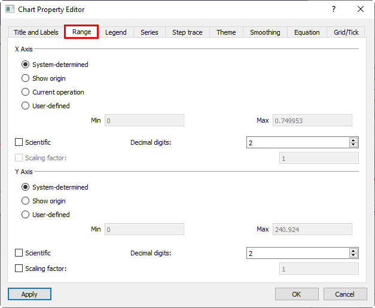
Range tab
This option helps the user to Show/Hide the legend display on the graph as shown in the Fig. 26.6.7.6.
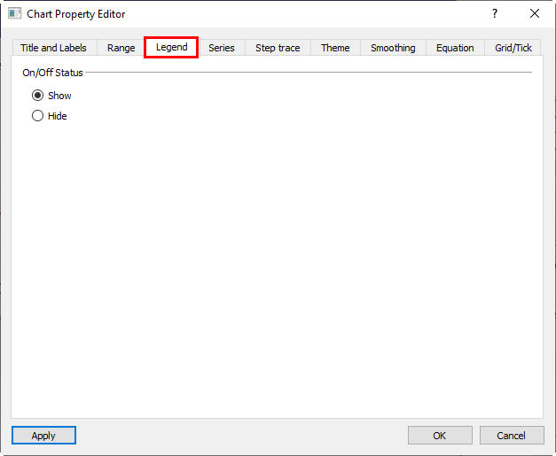
Legend tab
When a graph consists of multiple curves then user can change the color, type and thickness of each curve by clicking on the respective cell in the table displayed in this tab. We can also show or hide the curves using respective check box under Visibility column as shown in the Fig. 26.6.7.7.
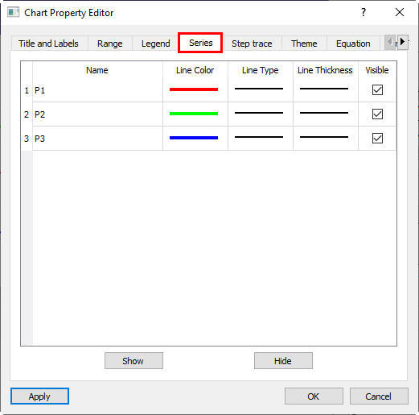
Series tab
Trace line: Step tracer line is displayed over the graph indicating the current step position over the graph.
On/Off status: User can show or hide the step tracer by selecting respective radio button as shown in Fig. 26.6.7.8.
Thickness: Thickness of the step trace line can be set by selecting respective radio button as shown in Fig. 26.6.7.8.
Color: Color of the step tracer line can be changed by clicking on the Color button and selecting the color from the pop-up as shown in the Fig. 26.6.7.8.
Callout: The values of the axis variables are displayed based on the current step selection as callout. User can show or hide the callout by selecting respective radio button of On/Off status under Callout as shown in Fig. 26.6.7.8.
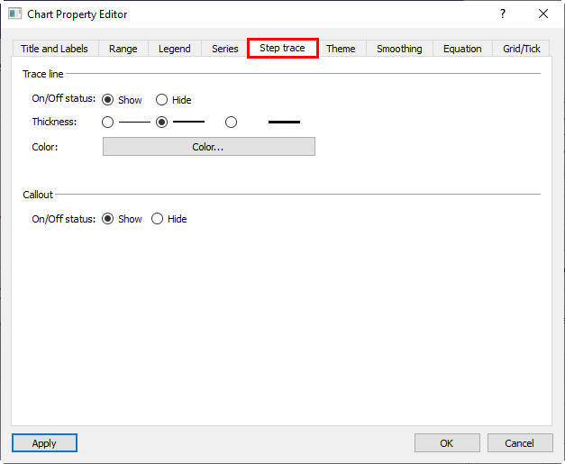
Step trace
In this the user can change the background color of the graph as shown in the Fig. 26.6.7.9. Standard under White background is selected as default theme by system, if user wants to use any other option available under this tab as default theme for all graphs then user can turn on the "Set as default theme" check box after selecting the theme and click on Apply button.
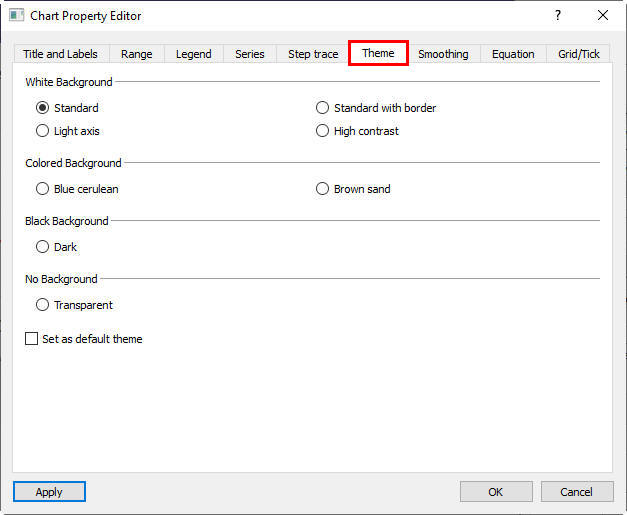
Theme tab
Most of the times the output curves may not be smooth and can be wavy then user can smoothen the curves to First order or Second order by selecting the respective radio button and "Visual effects" value.
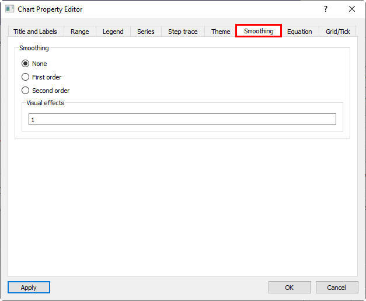
Smoothing tab
The user can define the equation for the Y-axis by turning on the "Use equation" checkbox. The variables that can be used in equation are available in Variables pull down menu and functions to use in the equation are available under Functions pull down menu as shown in the Fig. 26.6.7.11. The defined function will be overwritten with scaling function if user turns on the Scaling factor in Range tab.
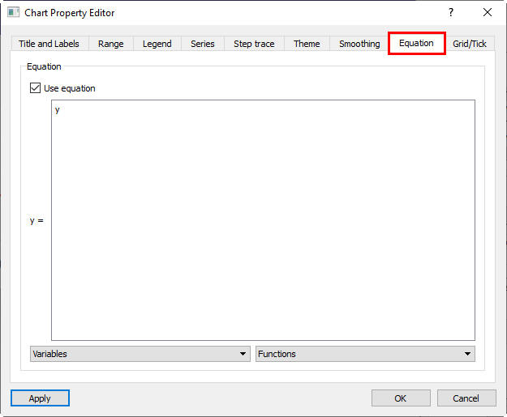
Equation tab
Tick: The user can set the number of ticks for Major and Minor grids for X and Y axes using respective double spine box under Tick.
Grid: User can turn on/off the display of grid lines using respective check boxes under grid tab as shown in the Fig. 26.6.7.12. Thickness and style of grid lines can be set from the options available under pull down menu as shown in the Fig. 26.6.7.12. User can set the color of grid lines using the Color button as shown in the Fig. 26.6.7.12.
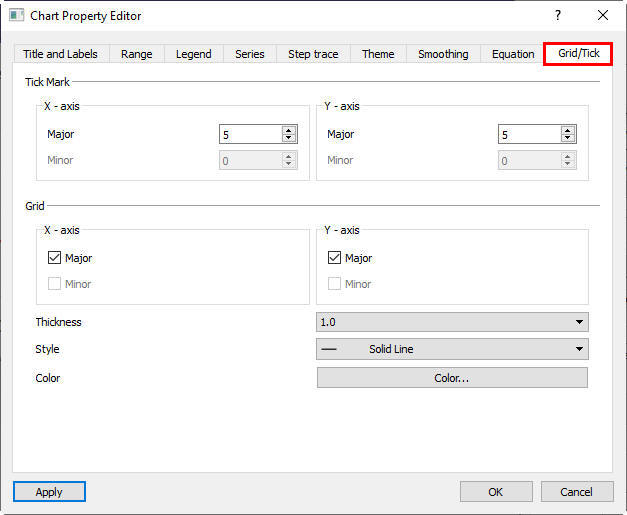
Grid/Tick Tab